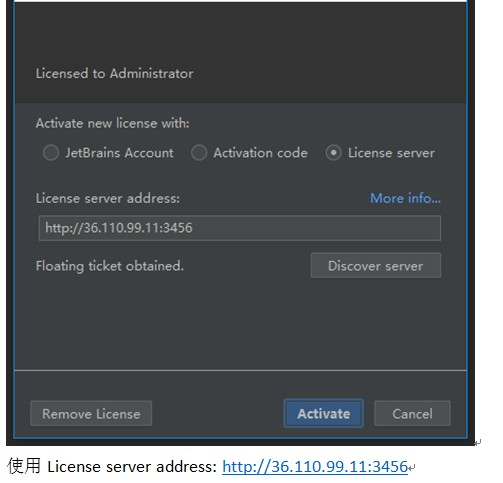
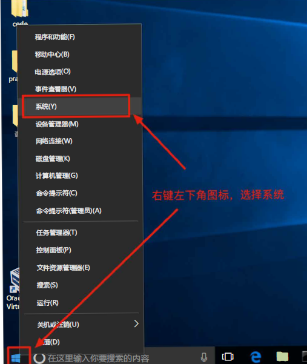
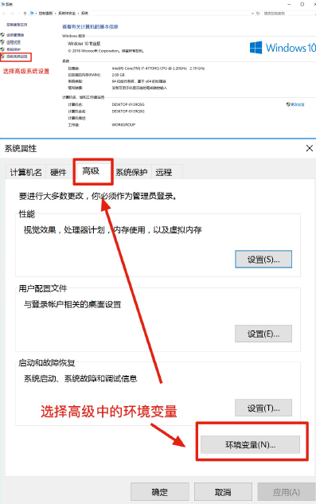
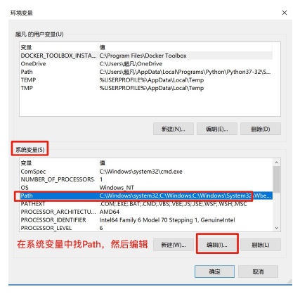
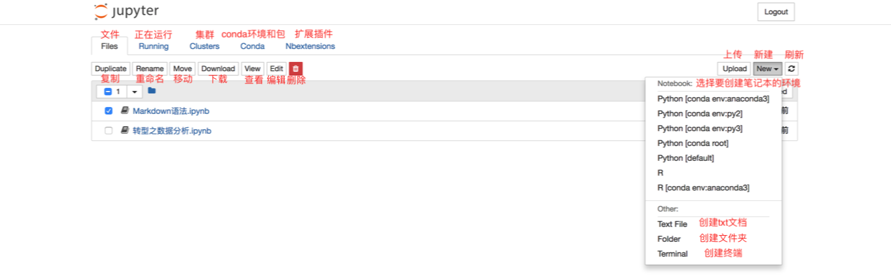
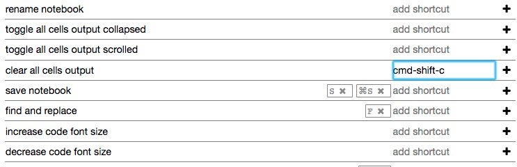
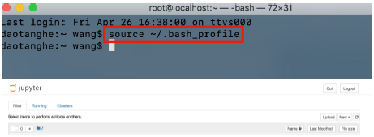

python简介
编程语言是用来定义 计算机程序 的形式语言。我们通过编程语言来编写程序代码，再通过语言处理程序执行向计算机发送指令，让计算机完成对应的工作。
Python也是编程语言的一种,并且是高级的编程语言。Python语言可能是第一种即简单又功能强大的编程语言。
python的优点
简单：Python是一种代表简单主义思想的语言。阅读一个良好的Python程序就感觉像是在读英语一样，尽管这个英语的要求非常严格！Python的这种伪代码本质是它最大的优点之一。它使你能够专注于解决问题而不是去搞明白语言本身。
易学：就如同你即将看到的一样，Python极其容易上手。前面已经提到了，Python有极其简单的语法。
免费、开源：Python是FLOSS（自由/开放源码软件）之一。简单地说，你可以自由地发布这个软件的拷贝、阅读它的源代码、对它做改动、把它的一部分用于新的自由软件中。FLOSS是基于一个团体分享知识的概念。这是为什什么Python如此优秀的原因之一—它是由一群希望看到一个更更加优秀的Python的人创造并经常改进着的。
层语言：当你用Python语言编写程序的时候，你无需考虑诸如如何管理理你的程序使用的内存一类的底层细节。
可移植性：由于它的开源本质，Python已经被移植在许多平台上（经过改动使它能够工作在不不同平台上）。如果你小心地避免使用依赖于系统的特性，那么你的所有Python程无需修改就可以在下述任何平台上面运行。这些平台包括Linux、Windows、FreeBSD、Macintosh、Solaris、OS/2、Amiga、AROS、AS/400、BeOS、OS/390、z/OS、Palm OS、QNX、VMS、Psion、Acom RISC OS、VxWorks、PlayStation、Sharp Zaurus、Windows CE甚至还有PocketPC、Symbian以及Google基于linux开发的Android平台！
解释性：这一点需要一些解释。一个用编译性语言比如C或C++写的程序可以从源文件（即C或C++语言）转换到一个你的计算机使用的语言（二进制代码，即0和1）。这个过程通过编译器和不同的标记、选项完成。当你运行你的程序的时候，连接/转载器软件把你的程序从硬盘复制到内存中并且运行。而Python语言写的程序不不需要编译成二进制代码。你可以直接从源代码运行程序。在计算机内部，Python解释器把源代码转换成称为字节码的中间形式，然后再把它翻译成计算机使用的机器器语言并运行。事实上，由于你不再需要担心如何编译程序，如何确保连接转载正确的库等等，所有这一切使得使用Python更更加简单。由于你只需要把你的Python程序拷贝到另外一台计算机上，它就可以工作了，这也使得你的Python程序更加易于移植。
面向对象：Python既支持面向过程的编程也支持面向对象的编程。在“面向过程”的语言中，程序是由过程或仅仅是可重用代码的函数构建起来的。在“面向对象”的语言中，程序是由数据和功能组合而成的对象构建起来的。与其他主要的语言如C++和Java相比，Python以一种非常强大又简单的方式实现面向对象编程。
可扩展性：如果你需要你的一段关键代码运行得更快或者希望某些算法不不公开，你可以把你的部分程序用C或C++编写，然后在你的Python程序中使用它们。
丰富的库：Python标准库确实很庞大。它可以帮助你处理理各种工作，包括正则表达式、文档生成、单元测试、线程、数据库、网页浏览器、CGI、FTP、电子邮件、XML、XML-RPC、HTML、WAV文件、密码系统、GUI（图形用户界面）、Tk和其他与系统有关的操作。记住，只要安装了Python，所有这些功能都是可用的。这被称作Python的“功能齐全”理念。除了标准库以外，还有许多其他高质量的库，如wxPython、Twisted和Python图像库等等。
规范的代码：Python采用强制缩进的方式使得代码具有极佳的可读性。
pycharm安装激活
PyCharm是一 Python IDE，带有一 整套可以帮助用户在使用Python语言开发时提高其效率的工具，比如调试、语法高亮、Project管理、 代码跳转、智能提示、自动完成、单元测试、版本控制。此外，该IDE提供了-些高级功能，以用于支持Django框架下的专业Web开发。
下载安装
激活
激活方式均选择License server。

第一服务器License server address: http://39.105.114.41:1027
第二服务器License server address: http://36.110.99.11:3456
以上两台服务器任选一台。
使用Anconda方式安装Python环境
Anaconda指的是一个开源的Python发行版本，其包含了conda、Python等180多个科学包及其依赖项。 因为包含了大量的科学包，Anaconda 的下载文件比较大（约 600 MB），如果只需要某些包，或者需要节省带宽或存储空间，也可以使用Miniconda这个较小的发行版（仅包含conda和 Python）。
下载
安装
根据安装步骤下一步安装完成即可
anaconda自带python3.6环境不需要自己再次去官网下载python了。
注意： Windows如果忘记勾选添加环境变量选项需要可以进行一下操作



注意： Mac 添加环境变量
export PATH="~/anaconda3/bin:$PATH"
或者
vim~/.bash_profile
点进入编辑模式，进行编辑然后添加
export PATH="~/anaconda3/bin:$PATH"
编辑完成后，点esc 退出
直接输入 ：:wq! 这四个字符后，回车即可保存。
使用
界面介绍

工具介绍

添加快捷键

创建jupyter虚拟环境
Windows
conda关于环境的几个常用命令
anaconda国内下载源：https://repo.continuum.io/archive/
查看当前的环境列列表：
$ conda env list
创建新的python环境，并且还可以指定python的版本
$ conda create -n myenv python=3.7 激活、进入某个环境： $ activate test 退出环境： $ deactivate
删除环境： $ conda remove --name test --all
创建想要添加的虚拟环境
conda create -n myenv python=3.5
创建好以后可以在C:\ProgramData\Anaconda3\envs\（具体与自己安装的anaconda路路径为准） 下找到新创建的环境
将新的环境添加到jupyter中
第一：首先到C:\ProgramData\Anaconda3\share\jupyter\kernels 文件夹下，会有一个自带的Python3文件夹；
第二：然后在Python3 文件夹同级目录下创建一个文件夹test文件夹（名字自己随便取，记得是英文）；
第三：将Python3文件夹下的kernel.json文件复制到test文件夹下；
第四：用记事本打开后
{ "argv": [ "C:\\ProgramData\\Anaconda3\\python.exe", "-m", "ipykernel_launcher", "-f", "
{connection_file}" ], "display_name": "Python 3", "language": "python" }
将路径改成新创建的环境路路径，然后Python 3改成jupyter中想显示的名字。
第五：重启jupyter-notebook,选择新建会出现你想要的环境。
安装ipykernel库
第一： activate myenv 激活你的虚拟环境
第二： conda install ipykernel , 中间会出现<[y]/n>? 在后面直接输入y,回车。
重启jupyter即可
Mac
mac中激活和退出某个环境的命令
激活、进入某个环境：
$ source activate test
注意： 最新的anaconda 命令改成了conda activate test
退出环境： $ source deactivate
注意： 最新的anaconda 命令改成了conda deactivate
创建想要添加的虚拟环境
$ conda create -n myenv python=3.5
查找kernel.json文件
$ find . -name "kernel.json"
第一：然后在 ./Library/Jupyter/kernels/ 目录下手动创建一个文件夹，然后创建一个名为 kernel.json 的文件，让该文件和已有的虚拟环境相关联，即可使用该虚拟环境。该json文件的内容大概如此：/Users/mac/Library/Jupyter/kernels/python37
{ "display_name": "py35", "language": "python", "argv": [ "/Users/mac/Library/Jupyter/kernels/python37/bin/python", "-m", "ipykernel_launcher", "-f", "{connection_file}" ] }
第二： 重启jupyter，就会出现新的环境
注意： 上面操作完成之后，会提示/Users/mac/anaconda3/envs/python37/bin/python3.7: No module named ipykernel_launcher
第三：激活虚拟环境，然后conda install ipykernel
第四： 重启
Anaconda安装拓拓展
第一： 终端输入
$ pip install jupyter_contrib_nbextensions
$ pip install jupyter_nbextensions_configurator
$ jupyter contrib nbextension install --user
第二： 重启jupyter
例如： Hinterland 代码提示
jupyter汉化问题
Mac
jupyter在浏览器器的显示语言是根据终端语言自适应的，如果你的终端是中文，那么启动jupyter后，浏览器器就以中文显示
- 终端是中文状态，jupyter是中文

- 如果想显示英文，有两种方式可以设置
一种是临时的
终端中依次输入以下命令：
export LC_ALL=en_US.UTF-8
export LANG=en_US.UTF-8
然后在当前终端输入jupyter notebook 启动jupyter；
注意：以上的命令设置只对当前终端生效，如果在新的终端启动jupyter，还是会显示中文，目前没有对所有终端生效的方法。
一种是永久的
- 在终端中输入locale查看系统默认的语言设置；
- 使用vim编辑bash_profile文件，修改设置，终端输入
vim~/.bash_profile

在最后一行添加
export LANG=en_US.UTF-8这一行保存文件退出，然后在终端输入
source ~/.bash_profile，让设置生效，然后启动

windows
windows中在cmd中启动jupyter，默认以英文显示，如果想要中文，需要下载git。
- 下载地址：https://www.git-scm.com/download/win
- 一路路next，进行安装；
- 安装完毕，搜索git bash并打开；
- 打开Git bash输入命令
jupyter notebook启动jupyter.